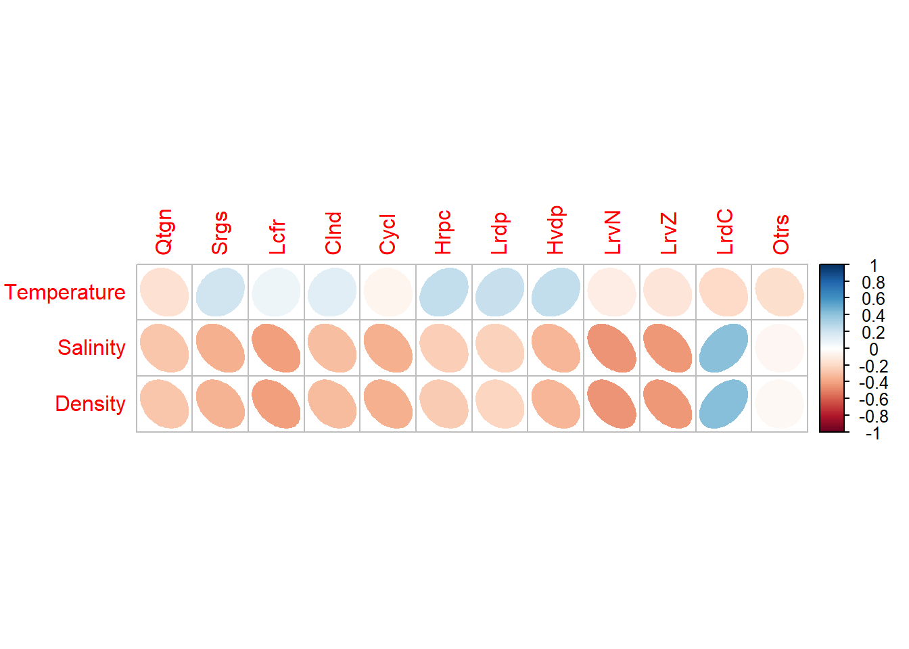
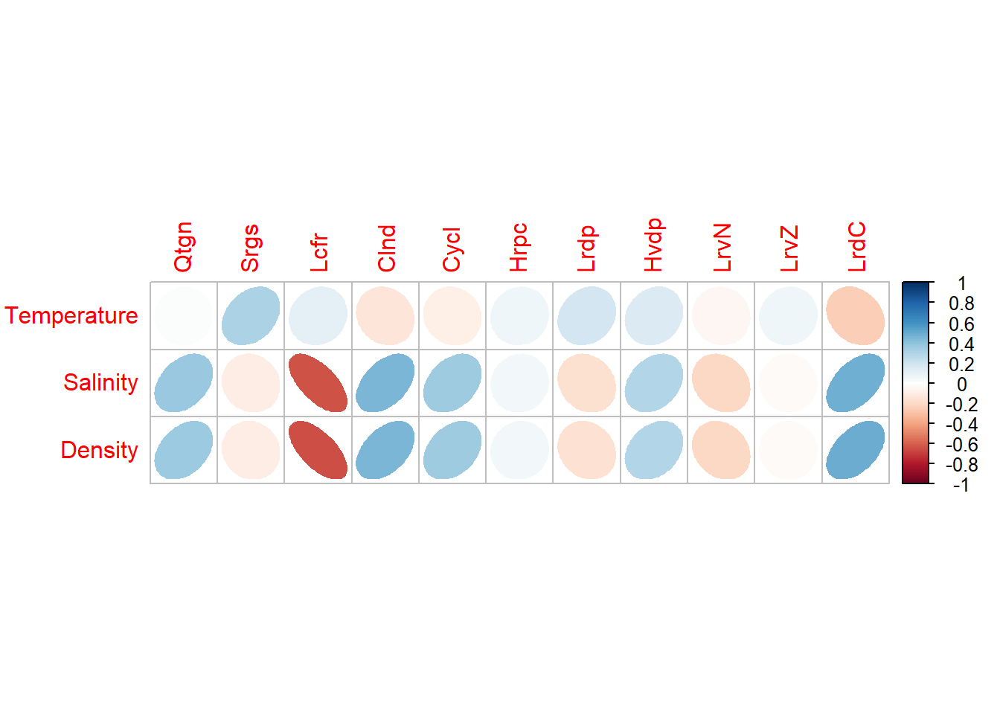
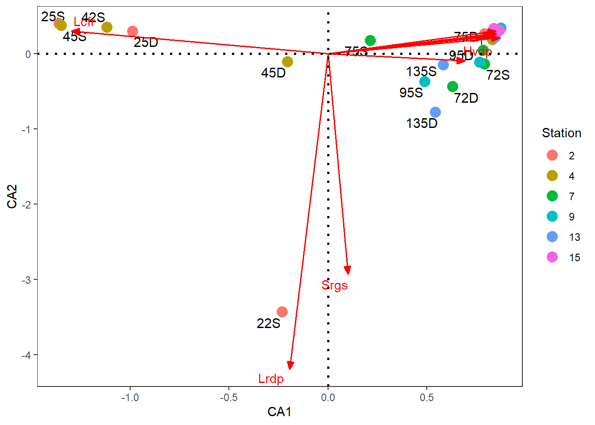
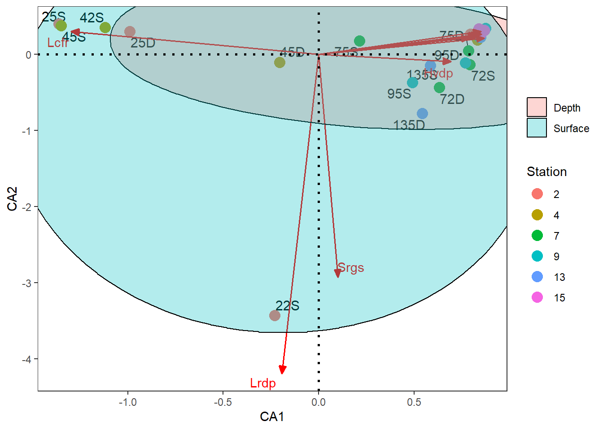
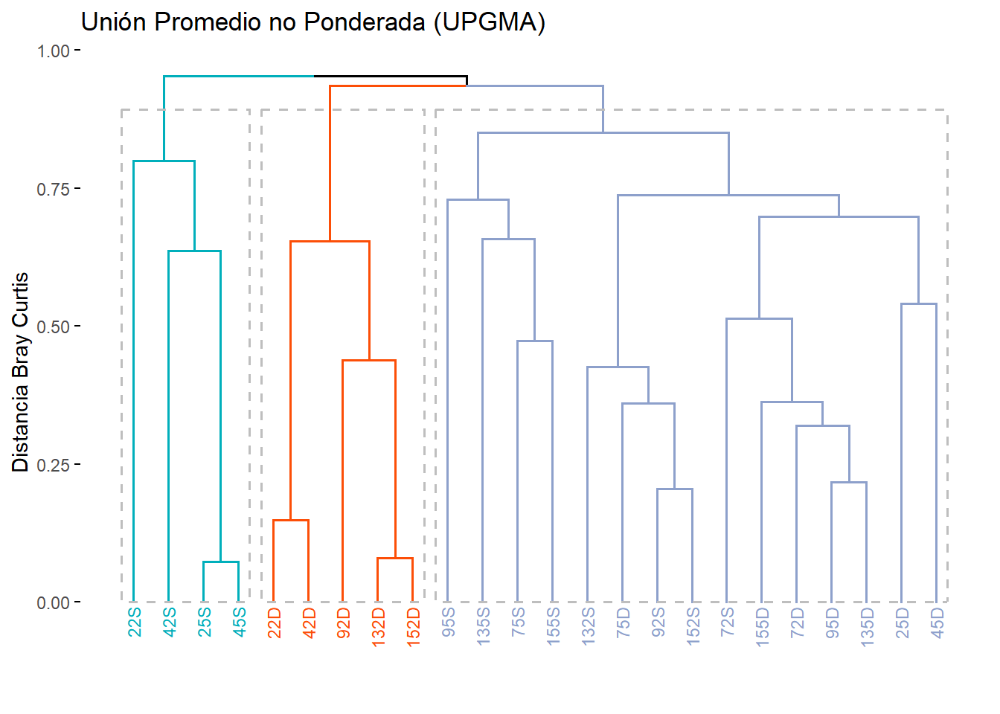
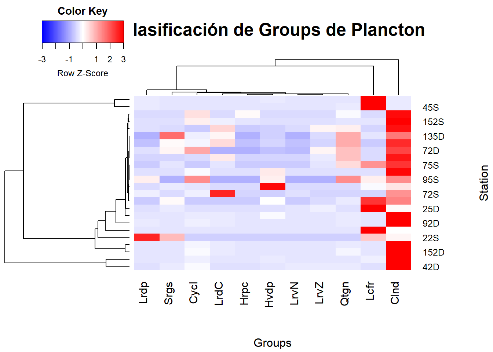

Resumen
This exercise consists of the initial processing of the data provided by Professor Lenin Florez to respond to the following requirement:
13.The zooplankton community structure requires further exploration. I suggest applying hierarchical cluster analysis or NMDS ordination to better visualize separation between sampling events based on mesozooplankton abundance data.
For this requirement, I propose to carry out the proposal of Borcard et al. (2018), with unconstrained ordering, classification and multivariate hypothesis testing techniques.
1. Principal Component Analysis (PCA)
Step 1. Load Libraries
Libraries required for the PCA.
Step 2. Taxa database
Tabla 1 shows the organization of the Taxa Groups (13), for the different sites or Station (6), the Sizes (2) and the Layerss (2).
| Station | Size | Layers | Groups | Abundance | Temperature | Salinity | Density |
|---|---|---|---|---|---|---|---|
| 2 | 250 μm | Surface | Quetognatos | 0 | 30.29749 | 34.69981 | 21.417828 |
| 2 | 250 μm | Surface | Sergestidae | 0 | 29.40959 | 25.83323 | 15.085254 |
| 2 | 250 μm | Surface | Luciferidae | 0 | 29.59008 | 12.38513 | 5.729643 |
| 2 | 250 μm | Surface | Calanoida | 32 | 30.29749 | 34.69981 | 21.417828 |
| 2 | 250 μm | Surface | Cyclopoida | 4 | 29.40959 | 25.83323 | 15.085254 |
| 2 | 250 μm | Surface | Harpacticoida | 2 | 29.59008 | 12.38513 | 5.729643 |
If the names of the taxa are too long, they can be abbreviated with the number of letters required (e.g. minlength = 4), so that the figures that include the taxa are not so saturated with text (Tabla 2).
Larva de Crustáceo
| Groups | Abbreviations |
|---|---|
| Quetognatos | Qtgn |
| Sergestidae | Srgs |
| Luciferidae | Lcfr |
| Calanoida | Clnd |
| Cyclopoida | Cycl |
| Harpacticoida | Hrpc |
| Larvas de peces | Lrdp |
| Huevos de peces | Hvdp |
| Larva Nauplio | LrvN |
| Larva Zoea | LrvZ |
| Otros | Otrs |
In Tabla 3 Ref corresponds to the first letter of the Station, the Size and the Layers. Ex. 22P corresponds to Station 2, Size 250 and Layers ppth.
| Ref | Station | Size | Layers | Temperature | Salinity | Density | Qtgn | Srgs | Lcfr | Clnd | Cycl | Hrpc | Lrdp | Hvdp | LrvN | LrvZ | LrdC | Otrs |
|---|---|---|---|---|---|---|---|---|---|---|---|---|---|---|---|---|---|---|
| 22D | 2 | 250 μm | Depth | 29.88 | 25.26 | 14.40 | 84 | 112 | 400 | 12672 | 408 | 48 | 68 | 135 | 56 | 28 | 16 | 3 |
| 22S | 2 | 250 μm | Surface | 29.75 | 23.27 | 13.35 | 0 | 1096 | 984 | 568 | 20 | 2 | 2488 | 28 | 0 | 0 | 0 | 24 |
| 25D | 2 | 500 μm | Depth | 29.40 | 19.97 | 10.53 | 0 | 9 | 355 | 50 | 0 | 0 | 0 | 0 | 1 | 16 | 0 | 3 |
| 25S | 2 | 500 μm | Surface | 29.99 | 28.66 | 17.02 | 2 | 2 | 10672 | 10 | 0 | 0 | 6 | 5 | 0 | 0 | 0 | 0 |
| 42D | 4 | 250 μm | Depth | 29.38 | 17.34 | 8.76 | 368 | 368 | 64 | 10680 | 928 | 32 | 48 | 120 | 280 | 400 | 0 | 200 |
| 42S | 4 | 250 μm | Surface | 29.52 | 21.89 | 12.11 | 0 | 4 | 2240 | 246 | 17 | 1 | 16 | 0 | 2 | 2 | 0 | 1 |
PStep 3. Exploration of biol vs. relationships biol4
La Figura 1 muestra que hay pocas relaciones lineales

Figura 2 shows the relationship of the biological variables with the Hellinger transformation, but the linear relationships are still low. In this sense, it is not recommended to perform the PCA. A NMDS is recommended.

2. Non-Metric Multidimensional Scaling (NMDS)
This technique will be applied to explore the gradients in the organization of the sites or Station, its relationship with the thirteen taxonomic Groups and the environmental variables. The Bray Curtis distance will be used for data association.
Paso 1. Cargar Librerías
The necessary libraries for this analysis are executed.
Step 2. NMDS
The Bray Curtis distance is used and the stress generated is 0.17 (17%), denoting a good configuration for this analysis.
| sitio | NMDS1 | NMDS2 | Station | Size | Layers |
|---|---|---|---|---|---|
| 22D | -0.2098219 | -0.0676470 | 2 | 250 μm | Depth |
| 22S | -0.6609339 | -0.4133637 | 2 | 250 μm | Surface |
| 25D | -0.5131072 | 0.6789221 | 2 | 500 μm | Depth |
| 25S | -1.3000654 | 0.0368918 | 2 | 500 μm | Surface |
| 42D | -0.1149899 | 0.0852813 | 4 | 250 μm | Depth |
| 42S | -0.6642895 | 0.3581678 | 4 | 250 μm | Surface |
Next, the coordinates of the Stations, Sizes, Layers, Taxonomic Groups and environmental variables are extracted, to be ordered with the ggplo2 library.
Figura 3 shows the organization of the NMDS for the Station references, with the taxonomic Groups and the environmental variables. A clear gradient cannot be seen, although Stations 9, 13 and 15 are the ones that group the largest number of taxa, associated with higher Temperature and Salinity.
Figura 4 shows the differentiation by Station, a horizontal gradient can be observed, where some Stations show differences by their taxonomic Groups.

Figura 5 that the taxonomic composition with 250 microns is nested at 500 microns.
Similar to ?@fig-fig 5, ?@fig-fig 6 shows absence of differences in taxonomic composition between Layerss.

Figura 7 complements Figura 4, by incorporating environmental variables in the characterization of the Stations and the taxonomic Groups.

3. Simple Correspondence Analysis (CA)
In this analysis, a complementary proposal to the one made with the NMDS is explored, with the difference that the chi square distance will be used, to relate the localities and the taxonomic groups.
Paso 1. Cargar Librerías
The necessary libraries for this analysis are executed.
Step 2. CA with ggplot2 package
The Chi Square distance is used with the thirteen biological variables. The variance captured by the first two canonical axes is 0.86 (86%).
Figura 8 does not show a very clear gradient in the characterization of the taxonomic Groups for the Stations evaluated.

Figura 9 also does not allow us to visualize a clear gradient in the arrangement of sites and taxa.



4. Non-Metric Multidimensional Scaling (NMDS)
This technique will be applied to evaluate another database, which does not relate to the thirteen taxonomic Groups, but to Abundance, Biomass and environmental data, between Station or sites, Sizes, Layers and climatic epochs.
Step 1. Load the database
The necessary libraries for this analysis are executed.
Step 2. Taxa database
Database with Abundance, Biomass and environmental data, between Station or sites, Sizes, Layers and climatic periods. (Tabla 4).
| Stations | Size | Layers | Period | Abundance | Biomass | Temperature | Salinity | Density |
|---|---|---|---|---|---|---|---|---|
| 4 | 500 μm | Depth | 1 | 4.501723 | 0.1147933 | 29.97106 | 26.28779 | 15.23075 |
| 4 | 500 μm | Depth | 1 | 4.318765 | 0.1147933 | 29.98770 | 26.69368 | 15.52944 |
| 4 | 500 μm | Depth | 1 | 15.720304 | 10.8987720 | 30.11647 | 33.95946 | 20.92512 |
| 4 | 500 μm | Depth | 1 | 376.190539 | 10.8987720 | 30.13961 | 34.04838 | 20.98512 |
| 7 | 500 μm | Depth | 1 | 28.179135 | 0.5760857 | 29.92421 | 33.53299 | 20.67232 |
| 7 | 500 μm | Depth | 1 | 38.975961 | 0.5760857 | 29.94042 | 33.80792 | 20.87408 |
In Tabla 5 Ref corresponds to the first letter of the Station, the Size, the Layers and the era. Ex. 225P1 corresponds to Station 2, Size 250 and Layers Depth and Epoch 1**.
| Ref | Stations | Size | Layers | Period | Abundance | Biomass | Temperature | Salinity | Density |
|---|---|---|---|---|---|---|---|---|---|
| 225D1 | 2 | 250 μm | Depth | 1 | 251.11 | 2.53 | 29.90 | 25.91 | 14.89 |
| 225S2 | 2 | 250 μm | Surface | 2 | 460.55 | 4.07 | 29.77 | 24.31 | 14.08 |
| 250D1 | 2 | 500 μm | Depth | 1 | 568.05 | 0.20 | 29.40 | 19.97 | 10.53 |
| 250S2 | 2 | 500 μm | Surface | 2 | 28.50 | 32.22 | 29.99 | 28.66 | 17.02 |
| 425D1 | 4 | 250 μm | Depth | 1 | 914.15 | 0.28 | 29.38 | 17.34 | 8.76 |
| 425S2 | 4 | 250 μm | Surface | 2 | 477.33 | 0.50 | 29.61 | 23.23 | 13.08 |
Step 3. Exploration of biol vs. relationships biol4
Few linear relationships

Step 4. NMDS
The Bray Curtis distance is used and the stress generated is 0.078 (7%), denoting a good configuration for this analysis.
Figura 10 shows an unclear pattern in the ordering of variables and locations.

Figura 11 shows little differentiation between the Stations, with the variables that characterize them.


. Cluster Analysis (CLA)
This analysis was requested by the evaluators, based on the Abundance of the thirteen taxonomic Groups, the aim is to classify the localities into Groups and compare them with the Stations of the study.
Load Libraries
The libraries required for the analysis are loaded.
La Tabla 6, es la misma Tabla 3 utilizada al inicio de este reporte, para el NMDS y CA.
| Ref | Station | Size | Layers | Temperature | Salinity | Density | Qtgn | Srgs | Lcfr | Clnd | Cycl | Hrpc | Lrdp | Hvdp | LrvN | LrvZ | LrdC | Otrs | |
|---|---|---|---|---|---|---|---|---|---|---|---|---|---|---|---|---|---|---|---|
| 22D | 22D | 2 | 250 μm | Depth | 29.88 | 25.26 | 14.40 | 84 | 112 | 400 | 12672 | 408 | 48 | 68 | 135 | 56 | 28 | 16 | 3 |
| 22S | 22S | 2 | 250 μm | Surface | 29.75 | 23.27 | 13.35 | 0 | 1096 | 984 | 568 | 20 | 2 | 2488 | 28 | 0 | 0 | 0 | 24 |
| 25D | 25D | 2 | 500 μm | Depth | 29.40 | 19.97 | 10.53 | 0 | 9 | 355 | 50 | 0 | 0 | 0 | 0 | 1 | 16 | 0 | 3 |
| 25S | 25S | 2 | 500 μm | Surface | 29.99 | 28.66 | 17.02 | 2 | 2 | 10672 | 10 | 0 | 0 | 6 | 5 | 0 | 0 | 0 | 0 |
| 42D | 42D | 4 | 250 μm | Depth | 29.38 | 17.34 | 8.76 | 368 | 368 | 64 | 10680 | 928 | 32 | 48 | 120 | 280 | 400 | 0 | 200 |
| 42S | 42S | 4 | 250 μm | Surface | 29.52 | 21.89 | 12.11 | 0 | 4 | 2240 | 246 | 17 | 1 | 16 | 0 | 2 | 2 | 0 | 1 |
En la siguiente figura se observa que las localidades 2 y 4 son las que presentan los taxones con los mayores valores de Abundance.
Salinity and Density are derived variables, which present a pattern between localities, inverse to that of the taxa.

Step 1. Distance between observations
The Bray Curtis distance will be applied for the biological variables, given the lack of linearity in their relationships.
Step 2. Choosing the best-fitting clustering method
2.1 Calculation of the seven dendrograms
2.2 Calculation of cophenetic correlations
The UPGMA grouping method is the one that presented the best cophenetic fit.
| Met | Cofen | |
|---|---|---|
| upgma | 3 | 0.907 |
| compl | 2 | 0.881 |
| upgmc | 4 | 0.869 |
| wpgma | 5 | 0.821 |
| simple | 1 | 0.804 |
| ward | 7 | 0.752 |
| wpgmc | 6 | 0.607 |
Step 3. Number of Groups formed
3.1 Fusion levels
This technique shows that the greatest amplitude occurs in the formation of three Groups or cluster, which bring together the classified observations.
3.2 Silhouette method
This technique shows that the greatest amplitude occurs in the formation of ten Groups or cluster, which bring together the classified observations.
[1] 11 Silueta-Número óptimo de Clusters k= 11
Con una aplitud promedio de silueta 0.3956652 3.3 Final hierarchical dendrogram
Dendrogram generated with the upgma method, the Bray distance and the three Groups formed.

3.4 Final non-hierarchical dendrogram
| grp | Ref | Station | Size | Layers | Temperature | Salinity | Density | |
|---|---|---|---|---|---|---|---|---|
| 22D | 1 | 22D | 2 | 250 μm | Depth | 29.88 | 25.26 | 14.40 |
| 22S | 2 | 22S | 2 | 250 μm | Surface | 29.75 | 23.27 | 13.35 |
| 25D | 3 | 25D | 2 | 500 μm | Depth | 29.40 | 19.97 | 10.53 |
| 25S | 2 | 25S | 2 | 500 μm | Surface | 29.99 | 28.66 | 17.02 |
| 42D | 1 | 42D | 4 | 250 μm | Depth | 29.38 | 17.34 | 8.76 |
| 42S | 2 | 42S | 4 | 250 μm | Surface | 29.52 | 21.89 | 12.11 |
Step 4. Contribution of the variables to the classification
In red, the taxonomic Groups are identified that, due to their Abundance pattern, contribute to the classification of the sites.

In this case, the contribution of the taxa is given for the Stations.
6. Linear Discriminant Analysis (LDA)
This analysis is carried out to try to optimize the separation of the Stations, based on the information on the Abundances of the different taxonomic Groups. It is incorporated into the canonical discriminant variant, to analyze the contribution of the taxa in the classification.
Load Libraries
Different libraries required for the lda are loaded.
The Tabla 7, is the same Tabla 6 used for most of the previous analyses.
| Ref | Station | Size | Layers | Temperature | Salinity | Density | Qtgn | Srgs | Lcfr | Clnd | Cycl | Hrpc | Lrdp | Hvdp | LrvN | LrvZ | LrdC | Otrs | |
|---|---|---|---|---|---|---|---|---|---|---|---|---|---|---|---|---|---|---|---|
| 22D | 22D | 2 | 250 μm | Depth | 29.88 | 25.26 | 14.40 | 84 | 112 | 400 | 12672 | 408 | 48 | 68 | 135 | 56 | 28 | 16 | 3 |
| 22S | 22S | 2 | 250 μm | Surface | 29.75 | 23.27 | 13.35 | 0 | 1096 | 984 | 568 | 20 | 2 | 2488 | 28 | 0 | 0 | 0 | 24 |
| 25D | 25D | 2 | 500 μm | Depth | 29.40 | 19.97 | 10.53 | 0 | 9 | 355 | 50 | 0 | 0 | 0 | 0 | 1 | 16 | 0 | 3 |
| 25S | 25S | 2 | 500 μm | Surface | 29.99 | 28.66 | 17.02 | 2 | 2 | 10672 | 10 | 0 | 0 | 6 | 5 | 0 | 0 | 0 | 0 |
| 42D | 42D | 4 | 250 μm | Depth | 29.38 | 17.34 | 8.76 | 368 | 368 | 64 | 10680 | 928 | 32 | 48 | 120 | 280 | 400 | 0 | 200 |
| 42S | 42S | 4 | 250 μm | Surface | 29.52 | 21.89 | 12.11 | 0 | 4 | 2240 | 246 | 17 | 1 | 16 | 0 | 2 | 2 | 0 | 1 |
The resolution of the taxa and environmental variables is shown again to classify the Stations or sampling sites.


Step 1. selection of a random sample for the lda
Division of data into training and test sets. It is recommended to standardize or normalize the predictor variables (Abundances of taxa) so that there is no scale effect. Some authors recommend dividing the training data by 60% and the test data by 40% FINNSTATS or training data by 80% and the test ones by 20%. STHDA. The second proposal will be used for this exercise.
1.Splitting the data into training and test sets
- Normalize the data. Categorical variables (Station) are automatically ignored.
Step 2. Assumptions of normality and homogeneity of covariances
Assumption 1. Multivariate normality
This is one of the requirements that the data must present to use LDA as a linear model. If this assumption is not met or cannot be executed, the LDA can be used as an exploratory analysis.
The diagnosis of multivariate normality was run for each Station, but the samples are singular matrices, all the matrices are singular, preventing the execution of the procedure.
Assumption 2. Homogeneity of covariances (sphericity)
Two permutational anovas were carried out, which allowed us to demonstrate that the assumption of homogeneity of covariances is met (p value is greater than 0.05).
Analysis of Variance Table
Response: Distances
Df Sum Sq Mean Sq F value Pr(>F)
Groups 5 40.301 8.0602 1.3808 0.2778
Residuals 18 105.075 5.8375
Permutation test for homogeneity of multivariate dispersions
Permutation: free
Number of permutations: 999
Response: Distances
Df Sum Sq Mean Sq F N.Perm Pr(>F)
Groups 5 40.301 8.0602 1.3808 999 0.257
Residuals 18 105.075 5.8375
Step 3. Fisher Linear Discriminant Analysis
The performance of the linear discriminant model will be analyzed to classify the six Stations, based on the Abundances of the taxonomic Groups.
2 4 7 9 13 15
0.17 0.17 0.17 0.17 0.17 0.17 The performance function generates the following contingency table, in which, with the exception of Station 2 (the most different), it shows a mixture of observations that do not allow the Station to be clearly differentiated, this is due to the similarity in the composition. and Abundance of taxonomic groups among Station.
group
Station 2 4 7 9 13 15
2 4 0 0 0 0 0
4 0 2 1 0 1 0
7 0 1 2 1 0 0
9 0 0 1 1 0 2
13 0 1 0 0 3 0
15 0 0 1 1 0 2The following result shows the percentage of correctness in the classification of the Stations, which is low in most cases.
2 4 7 9 13 15
100 50 50 25 75 50
Step 4. Graphic visualization of the LDA
The ggplot2 package will be used as it has been used in the different techniques, due to its good level of resolution to visualize patterns in the data.
The following figure corroborates the separation of Station 2, due to its difference in the composition and Abundance of taxa found. The rest of the localities present a mixture or greater taxonomic similarity.

[1] "Ref" "Station" "Size" "Layers" "Temperature"
[6] "Salinity" "Density" "Qtgn" "Srgs" "Lcfr"
[11] "Clnd" "Cycl" "Hrpc" "Lrdp" "Hvdp"
[16] "LrvN" "LrvZ" "LrdC" "Otrs" The following canonical discriminant analysis allows us to demonstrate that the difference in Station 2 is due to the composition and Abundance of taxa such as Srgs, Lcfr, Lrdp and Hvdp.
7. Manovas - Taxonomic Groups of biol2
The following manova is used to test the hypothesis of differences between the Stations, according to the Abundance and composition of the taxonomic groups. As it is a parametric linear model, the parametric assumptions must be tested, finding that the multivariate normality of the residuals is not met, which is why permanovas that do not require this assumption will subsequently be carried out.
Step 1. Multivariate Variance Analysis - MANOVA
1.1 Response of each variable to the differences between Station
solo tres taxones muestran significancia para diferenciar a las Station (valor p < 0,05)
| Taxa | Valores |
|---|---|
| Lcf | 0.0108 |
| LrvN | 0.0460 |
| Qtgn | 0.0568 |
| Cycl | 0.0631 |
| LrvZ | 0.1027 |
| Clnd | 0.2022 |
| Hvdp | 0.2718 |
| Lrdp | 0.4695 |
| Srgs | 0.4933 |
| Hrpc | 0.6668 |
| Otrs | 0.7119 |
1.2 Four types of MANOVA
Only the Roy test shows significant differences in Abundance and composition for the Stations in comparison (p value < 0.05)
Df Pillai approx F num Df den Df Pr(>F)
Station 5 2.6511 1.2312 55 60 0.2151
Residuals 18 Df Wilks approx F num Df den Df Pr(>F)
Station 5 0.0056102 1.5244 55 40.617 0.08095 .
Residuals 18
---
Signif. codes: 0 '***' 0.001 '**' 0.01 '*' 0.05 '.' 0.1 ' ' 1 Df Hotelling-Lawley approx F num Df den Df Pr(>F)
Station 5 18.343 2.1344 55 32 0.01163 *
Residuals 18
---
Signif. codes: 0 '***' 0.001 '**' 0.01 '*' 0.05 '.' 0.1 ' ' 1 Df Roy approx F num Df den Df Pr(>F)
Station 5 14.572 15.897 11 12 1.717e-05 ***
Residuals 18
---
Signif. codes: 0 '***' 0.001 '**' 0.01 '*' 0.05 '.' 0.1 ' ' 11.3. Assumption of normality of MANOVA residuals
The assumption of multivariate normality on the Manova residuals is not met (W = 0.65, p-value = 2.8e-06). In this sense, the MANOVA cannot be used to test differences between the Station.
Shapiro-Wilk normality test
data: Z
W = 0.61194, p-value = 8.42e-071.4. Independence assumption
This assumption is met (p value > 0.05).
lag Autocorrelation D-W Statistic p-value
1 -0.3702746 2.719824 0.398
Alternative hypothesis: rho != 0
8. Permanovas - Taxonomic Groups
This hypothesis test is carried out because some assumptions of the MANOVA were not met. Different variants will be analyzed such as the ANOSIM and the PERMANOVA of one and several factors.
Permanova 1. Analysis of Similarities - ANOSIM
Step 1. Distance between observations (Hellinger for this case)
The Hellinger transformation is performed, because it manages to linearize the Abundances of the taxa, allowing differences to be found between some of the Stations in comparison.
Step 2. Multivariate mean equality hypothesis test
There are few differences between the Stations according to the selected taxonomic groups (R= 0.21, p= 0.012).
Call:
anosim(x = biol2.dist1, grouping = biol2$Station, permutations = 1000)
Dissimilarity: bray
ANOSIM statistic R: 0.2139
Significance: 0.015984
Permutation: free
Number of permutations: 1000
Upper quantiles of permutations (null model):
90% 95% 97.5% 99%
0.106 0.151 0.180 0.234
Dissimilarity ranks between and within classes:
0% 25% 50% 75% 100% N
Between 1 73.75 143.5 212.25 276 240
2 49 162.00 187.0 211.25 250 6
4 17 106.25 135.5 196.25 253 6
7 40 45.00 61.5 84.00 148 6
9 39 80.50 84.0 111.50 132 6
13 7 127.25 143.5 158.25 216 6
15 10 44.50 57.5 60.75 159 6
Step 3. ANOSIM figure

Permanova 2. One-factor (one-way) permanova
According to the theory, this test is usually more robust than the anosim, in finding differences between the Groups in comparison.
Step 1. Distance between observations (Hellinger for this case)
Linearization of the Abundances of Taxonomic Groups.
Step 2. Multivariate mean equality hypothesis test
There are differences between the Stations similar to the anosim (Pseudo F= 2.73; g.l.= 5, 18; p= 0.012).
Permutation test for adonis under reduced model
Terms added sequentially (first to last)
Permutation: free
Number of permutations: 1000
adonis2(formula = biol2.dist1 ~ biol2$Station, permutations = 1000)
Df SumOfSqs R2 F Pr(>F)
biol2$Station 5 1.4582 0.42497 2.6605 0.004995 **
Residual 18 1.9731 0.57503
Total 23 3.4313 1.00000
---
Signif. codes: 0 '***' 0.001 '**' 0.01 '*' 0.05 '.' 0.1 ' ' 1Para este caso, cinco taxones presentan un aporte significativo en las diferencias entre las Station en comparación.
Permutation: free
Number of permutations: 1000
Terms added sequentially (first to last)
Df SumsOfSqs MeanSqs F.Model R2 Pr(>F)
Qtgn 1 0.2325 0.23251 3.1095 0.06776 0.044955 *
Srgs 1 0.2551 0.25510 3.4116 0.07435 0.043956 *
Lcfr 1 1.0637 1.06368 14.2252 0.30999 0.000999 ***
Clnd 1 0.0736 0.07364 0.9848 0.02146 0.367632
Cycl 1 0.0629 0.06295 0.8418 0.01834 0.483516
Hrpc 1 0.1239 0.12386 1.6564 0.03610 0.151848
Lrdp 1 0.2257 0.22571 3.0185 0.06578 0.030969 *
Hvdp 1 0.1801 0.18015 2.4092 0.05250 0.053946 .
LrvN 1 0.1125 0.11252 1.5048 0.03279 0.194805
LrvZ 1 0.1117 0.11170 1.4938 0.03255 0.216783
Otrs 1 0.0922 0.09217 1.2327 0.02686 0.305694
Residuals 12 0.8973 0.07477 0.26150
Total 23 3.4313 1.00000
---
Signif. codes: 0 '***' 0.001 '**' 0.01 '*' 0.05 '.' 0.1 ' ' 1
Permanova 3. Two-factor (two-way) permanova
For this case, the differences in the Abundance and composition of the taxonomic Groups between Station (factor 1) and Sizes (factor 2) are evaluated.
Step 1. Distance between observations (Hellinger for this case)
Linearization of the Abundances of the taxonomic Groups.sim (Pseudo F= 2.73; g.l.= 5, 18; p= 0.012).
Step 2. Multivariate mean equality hypothesis test
There are differences between the Stations and between the Sizes, but not in the interaction between the two factors.
Permutation test for adonis under reduced model
Terms added sequentially (first to last)
Permutation: free
Number of permutations: 1000
adonis2(formula = biol2.dist1 ~ biol2$Station * biol2$Size, permutations = 1000)
Df SumOfSqs R2 F Pr(>F)
biol2$Station 5 1.4582 0.42497 3.2253 0.002997 **
biol2$Size 1 0.4741 0.13817 5.2433 0.008991 **
biol2$Station:biol2$Size 5 0.4139 0.12063 0.9156 0.542458
Residual 12 1.0851 0.31623
Total 23 3.4313 1.00000
---
Signif. codes: 0 '***' 0.001 '**' 0.01 '*' 0.05 '.' 0.1 ' ' 1
Permanova 4. Two-factor (two-way) permanova
For this case, the differences in the Abundance and composition of the taxonomic Groups between Station (factor 1) and the Layers of Layers (factor 2) are evaluated.
Step 1. Distance between observations (Hellinger for this case)
Linearization of the Abundances of Taxonomic Groups.
Step 2. Multivariate mean equality hypothesis test
There are differences between the Stations and between the Layers, but not in the interaction between the two factors.
Permutation test for adonis under reduced model
Terms added sequentially (first to last)
Permutation: free
Number of permutations: 1000
adonis2(formula = biol2.dist1 ~ biol2$Station * biol2$Layers, permutations = 1000)
Df SumOfSqs R2 F Pr(>F)
biol2$Station 5 1.4582 0.42497 2.8496 0.008991 **
biol2$Layers 1 0.3042 0.08867 2.9728 0.043956 *
biol2$Station:biol2$Layers 5 0.4407 0.12845 0.8613 0.552448
Residual 12 1.2281 0.35792
Total 23 3.4313 1.00000
---
Signif. codes: 0 '***' 0.001 '**' 0.01 '*' 0.05 '.' 0.1 ' ' 1